Harjoitus 2: QGIS-projektin valmistelu, synkronointi ja digitointi
Harjoituksen sisältö
Harjoituksessa luodaan QGIS-työpöytäohjelmistolla projekti, jota myöhemmin käytetään mobiilisovelluksessa. Lisäksi asennetaan QGISin Mergin Maps -lisäosa, joka mahdollistaa projektitiedostojen siirron tietokoneen ja mobiililaitteen välillä.
Harjoituksen tavoite
Koulutettava oppii luomaan QGIS-projektin sekä paketoimaan ja siirtämään sen mobiililaitteeseen Mergin Maps -lisäosaa käyttäen.
Arvioitu kesto
60 min.
Valmistautuminen
Avaa QGIS-työpöytäohjelmistotietokoneellasi ja aloita siellä uusi QGIS-projekti (ylävalikosta Projekti > Uusi). Tallenna projektitiedosto (Projekti > Tallenna nimellä...) nimellä “MerginMaps-kurssiprojekti” tai vastaava. Harjoituksessa oletetaan myös, että Input-ohjelmisto on valmiiksi asennettu mobiililaitteeseen.
Projektin perusasetukset
Avaa QGISin ylävalikosta projektin ominaisuudet (Projekti > Ominaisuudet) ja sieltä Yleiset-välilehti. Etsi sieltä asetus Tallenna polut ja valitse alasvetovalikosta arvoksi suhteellinen. Tällöin projektia siirrettäessä eri laitteille projekti ja sen aineistot löytyvät, sillä hakemistopolut viittaavat ainoastaan projektin kotihakemistoon, eivätkä esimerkiksi C-levyn juureen ja laitekohtaiseen hakemistorakenteeseen.
Tämän jälkeen mennään vielä samassa Projektin ominaisuudet -ikkunassa Koordinaattijärjestelmä-välilehdelle ja valitaan koordinaattijärjestelmäksi EPSG:3067.
Mergin -lisäosan asentaminen ja palveluun kirjautuminen
Asennetaan ensin lisäosa QGISin ylävalikosta: Lisäosat > Hallitse ja asenna lisäosia, kirjoita hakukenttään Mergin ja klikkaa “Asenna lisäosa”. Lisäosan asennuttua se löytyy Lisäosat-ylävalikosta.
Mergin Maps edellyttää palveluunsa kirjautumista, joko yksityishenkilönä tai yritystilin kautta. Tällöin aineisto on käytössä useamman henkilön kesken organisaation sisällä ja tietojen päivittäminen laitteiden välillä on sujuvampaa.
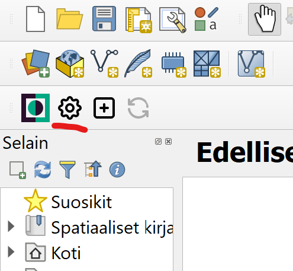
Uusi projekti tulee synkronoida myös Mergin Mapsin pilvipalveluun, johon pääsen kirjautumaan ladatun lisäosan “hammasratas”-kuvaketta painamalla. Kun olet kirjautunut verkkopalveluun, pääset samoilla tunnuksilla yhdistämään QGISin Mergin Mapsin palvelimeen. Jos haluat tulevia sessioita varten tallentaa kirjautumistietosi, laita valinta kohtaan “save your credentials”. Custom Mergin Maps server on oletuksena alla olevan kuvan mukaisesti:
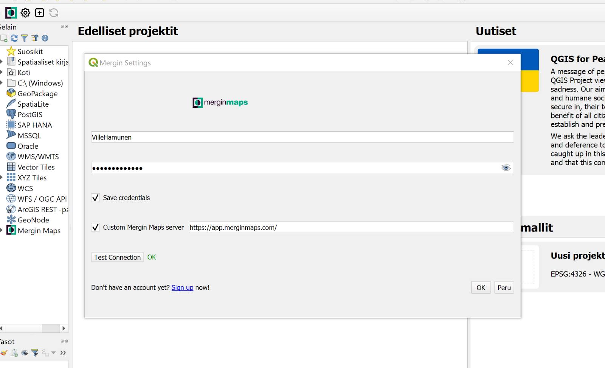
Yhteyttä muodostaessa ohjelma saattaa joskus herjata virhettä, että annetun serverin URL-osoite on väärä. Tähän ongelmaan voi kokeilla ratkaisuksi muuttaa QGISin käyttäjäprofiilia - eli käytännössä luoda uusi profiili. Uusi profiili tehdään ylävalikosta Asetukset-käyttäjäprofiilit-uusi profiili. Uusi käyttäjäprofiili asettaa QGIS-ohjelman oletustilaan, eli tällöin Mergin-lisäosa tulee asentaa uudestaan. Käyttäjäprofiileja luomalla voi myös luoda itselleen erilaisia työtiloja, mikäli työskentelee hyvin erilaisten projektien ja työkalujen kanssa.

Omalle tilille pääset kirjautumaan myös selaimen kautta osoitteessa: https://app.merginmaps.com/login. Selaimen kautta pääset tarkastelemaan kaikkia tilin projekteja ja käyttäjiä sekä muuttamaan asetuksia ja tarkastelemaan historiatietoja. Selaimen kautta voit myös luoda uusia projekteja ja jakaa niitä eri käyttäjille.
Mergin-lisäosan käyttö
Kirjautumisen jälkeen voit luoda uuden projektin työkalun plus-ikonia painamalla:

Kun lähdetään luomaan täysin uutta sisältöä, valitaan “New basic QGIS project”. Jos sinulla on jo olemassa valmis QGIS projekti, jonka haluat kääntää mobiililaitteelle, valitse “Package current QGIS project”. Klikataan siis “New basic QGIS project”. Mikäli olet kirjautunut oikein, työtilan kohdalla pitäisi olla, tai pitäisi olla valittavissa tilisi. Anna projektille haluamasi nimi kohtaan “Project Name”. Älä tee projektista julkista (ainakaan vielä), joten jätä valitsematta “Make the project public”. Uusi projekti tallentuu myös koneellesi, joten valitse vielä tiedostolähteeksi sama kansio, mihin projektitiedosto on tallennettu koneellasi.
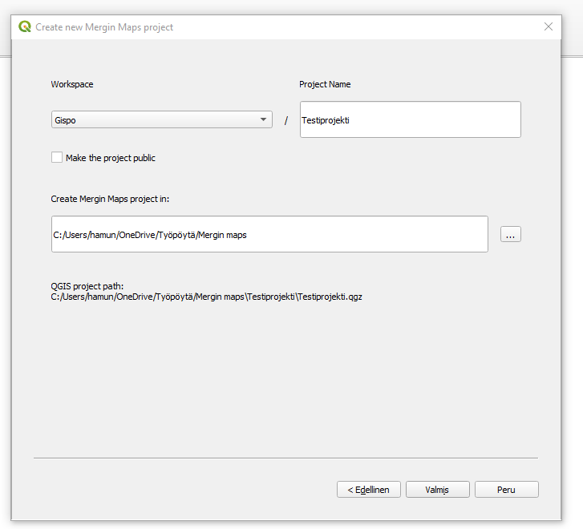
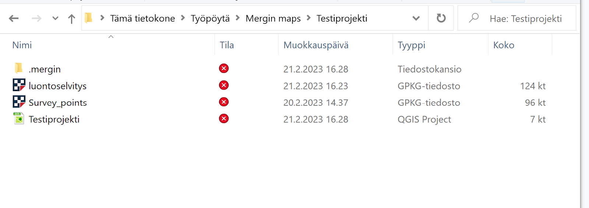
Uuteen projektiin aukeaa oletusarvoisesti taustakartta, sekä pistetaso. Nämä ovat poistettavissa tai jatkojalostettavissa omaa käyttötarkoitusta varten.
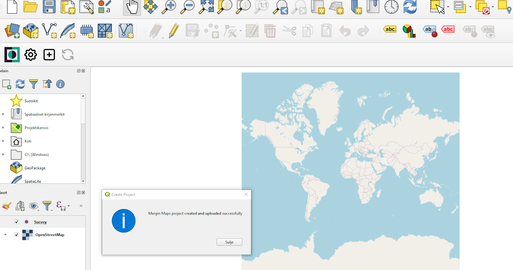
Taustakarttojen lisäys
Taustakarttoja voi lisätä myös omien mieltymysten ja tarpeiden mukaan. Taustakartan voi lisätä sekä esimerkiksi WMS-tasona, jos mobiililaite on varustettu internet-yhteydellä tai se voidaan lisätä tiedostotasona jos yhteyttä ei ole, se on liian hidas, tai sitä ei muusta syystä haluta käyttää.
Eräs mahdollisuus on myös lisätä taustakartta rajapintana QGIS-projektiin, mutta muuttaa se ilman internet-yhteyttä käytettäväksi Geopackage-tiedostoksi halutulta alueelta projektitiedoston siirron/synkronoinnin yhteydessä. Tästä lisää myöhemmin. |
Lisätään nyt taustakartta koko Suomen alueelta käyttäen QGISin QuickMapServices-lisäosaa. Asennetaan ensin lisäosa QGISin ylävalikosta: Lisäosat > Hallitse ja asenna lisäosia, kirjoita hakukenttään QuickMapServices ja klikkaa “Asenna lisäosa”. Lisäosan asennuttua se löytyy Verkko-ylävalikosta. Lisäksi QGIS-ikkunaan aukeaa “Search QMS”-paneeli, jolla saatavissa olevia taustakarttapalveluita voi etsiä. Jos paneeli ei aukea automaattisesti, sen voi avata ylävalikon kautta. Hae paneelin avulla “Kapsi - taustakartta” ja lisää projektiin kaksoisklikkaamalla.
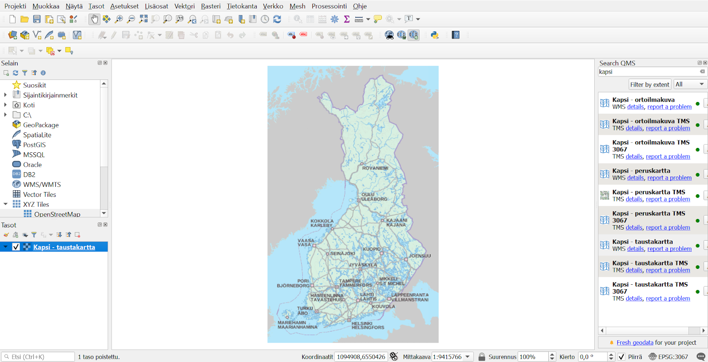
Projektiin voi halutessaan lisätä useammankin taustakartan, joita voidaan käyttää Mergin Mapsissa yhtäaikaisesti. Tässä voi myös hyödyntää QGISin karttateemat-ominaisuutta.
**Digitointia auttamaan saattaisi olla hyödyllistä käyttää lisäksi esimerkiksi ortoilmakuvaa, joka löytyy myös QuickMapServicen “Kapsi”-haulla.
Pidetään projekti nyt mahdollisimman yksinkertaisena ja pidetään vain “Kapsi - taustakartta” -taso.**
Tasojen luonti
Käytämme tässä kohtaa harjoitusta varten luotua GeoPackagea testaamisen nopeuttamiseksi. Myöhemmissä harjoituksissa jalostamme tasoja edelleen ja tutustumme visualisoinnin hienouksiin ja tiedon tallettamisen nopeuttamiseen. Mikäli kuitenkin tarvitset kertausta perusmuotoisen GeoPackage-tason luomisessa, ohjeet tämän tekemiseen löydät tämän harjoituksen lopusta osiosta “lisätehtävät”. Käy hakemassa kurssihakemistosta kaksi tasoa, “lintuhavainnot” ja “luontoselvitys” vektoritasojen lisäyksen kautta. Molemmat tasot on pakattu saman GeoPackagen (luontoselvitys) sisälle.
Järjestä vielä projektiin luodut tasot Tasot-paneelissa, kuten alla olevassa kuvassa. Järjestyksen muuttaminen onnistuu esimerkiksi tasoja “raahaamalla” (ns. drag & drop). Ylempänä listassa olevat taso piirretään alempana olevan päälle, joten on luontevaa, että taustakartta ja polygoni-tasot ovat alimpina. Ajan salliessa, voit myös muuttaa tasojen kuvaustyylejä itsellesi mieleiseksi. Kysy tarvittaessa apua kouluttajalta.
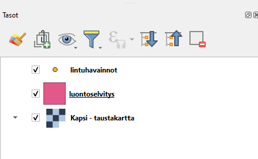
Voit nyt vertailun vuoksi testata, miltä editointi ja tietojen lisäys näyttää QGISissa työskenneltäessä. Aseta siis lintuhavainnot-taso editoitavaksi, esimerkiksi klikkaamalla tason kohdalta hiiren oikealla napilla ja valitsemalla Editointi päälle/pois. Paina Lisää pistekohde -nappia digitoinnin työkalupalkista (kts. kuvaa alla). Klikkaa kartalla lisätäksesi pistemäisen kohteen, jolloin lomake aukeaa. Testaa kutakin kenttää ja huomaa, että niihin lisätään tietoja eri tavoilla. Nyt ei kuitenkaan ole tarpeen lisätä kohdetta, joten testattuasi voit klikata Peru.
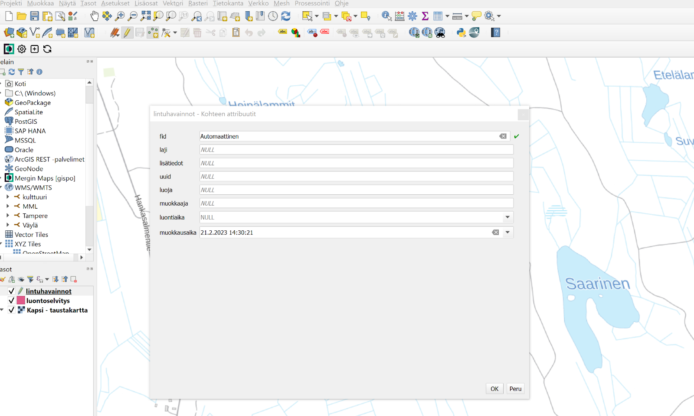
Kun olet valmis, tallenna vielä projektitiedosto pikanäppäimellä CTRL + T tai päävalikosta Projekti > Tallenna. Nyt perustasot ja -aineistot on lisätty QGIS-projektiin, joten valmistellaan seuraavaksi projektin siirto mobiililaitteeseen.
Merginin kehittäjät suosittelevat GeoPackagen käyttöä vektoridatalle, ja myös rasteridatalle erityisesti suurten tiedostokokojen takia. Lisätietoja näiden esivalmistelusta löytyy dokumentaatiosta
Projektin synkronointi pilveen ja siihen liittyviä huomioita
Kun projekti on siinä tilassa, että se on valmis vietäväksi pilveen ja mobiililaitteelle, voidaan painaa työkaluvalikon Syncronize-painiketta.

Ennen synkronointia ohjelma antaa varoituksen, mikäli tiedostoissa on joitain häiriöitä, mitkä voivat vaikuttaa tiedon siirtymiseen ja niiden toimintaan mobiililaitteella. Erityismerkit, muutokset taulukoissa sekä tietolähteissä antavat herkästi virheilmoituksen, mutta voit tässä kohtaa olla välittämättä niistä. Rajapinnasta haettujen aineistojen haasteena on se, etteivät ne lataudu ilman verkkoyhteyttä. Tämä voi tulla vastaan maastokartoituksissa, joissa ollaan verkon ulottumattomissa.
Tilanteessa, jossa tiedät etukäteen olevasi verkon ulottumattomissa, voit luoda offline-tilassa toimivan rajatun tason rajapinnasta “Generate xyz Tiles” (MBTiles) -työkalun avulla. Valitse “Extent” valikkoon “Use Map Canvas Extent”, tarkkuustasoja haluttu määrä (tässä esimerkissä välille 10-15) ja lopussa tallennuskansioksi projektin kansio. Paina sitten Suorita. Taustakartan mittakaava ja zoomattavien tasojen määrä vaikuttaa prosessointiaikaan ja tiedoston kokoon.
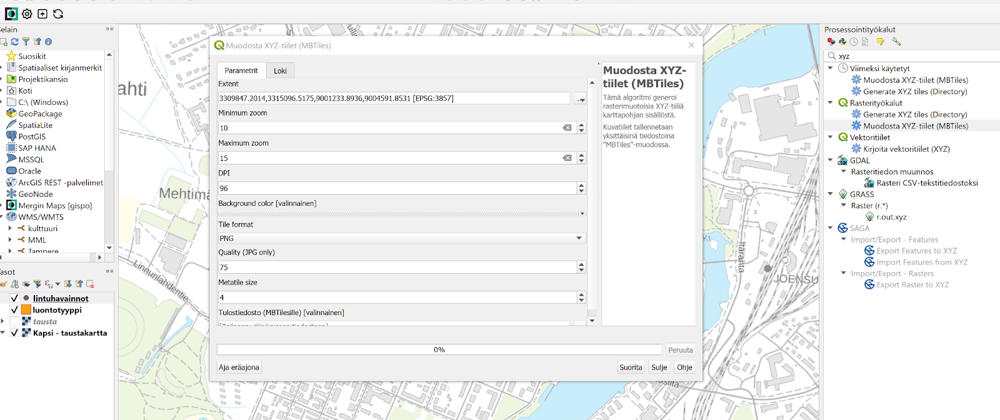
Prosessin jälkeen voit järjestellä tasot haluamallasi tavalla ja tämän jälkeen muista synkronoida projekti pilvipalveluun.
Projektin avaaminen mobiililaitteessa
Avataan Mergin maps nyt mobiililaitteellasi. Aluksi sovellus ohjaa sinut kirjautumissivulle, johon sinun tulee syöttää samat tunnukset, kuin selaimessa ja QGISissä.
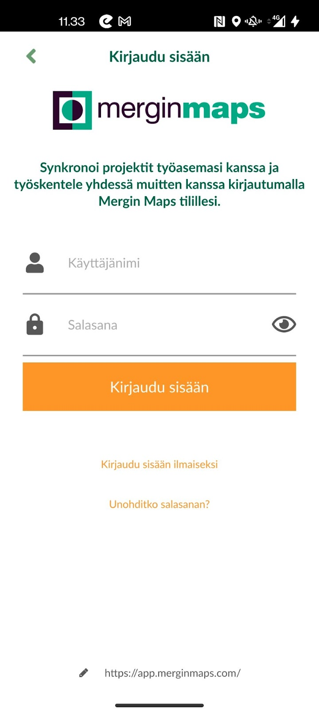
Kirjautumisen jälkeen sinulle aukeaa kaikki projektit, jotka olet synkronoinut pilvipalveluun. Paina tämän harjoituksen yhteyteen luodun projektin lautauslinkkiä, niin QGISin puolella valmisteltu projekti aukeaa mobiililaitteelle.

Tarkastellaan nyt Mergin Mapsin työtilaa. Alavalikon vasemmassa reunassa on “Projektit”, josta pääset tarkastelemaan kaikkia käyttäjän luomia työtiloja. “GPS” -painike ohjaa sinut nykyiseen sijaintiisi, mikäli GPS-haku on aktivoitu. “Tallenna”-valikosta pääset digitoimaan ja syöttämään uutta tietoa. “Lisää”-valikko avaa mm. tasot nähtäviksi.

“Lisää”-valikon avaamalla pääset muokkaamaan projektin asetuksia mobiilisovelluksessa. Tässä kohtaa tärkeimmät valikot ovat “Tasot” sekä “Asetukset”, joita tarkastelemme kohta lähemmin.
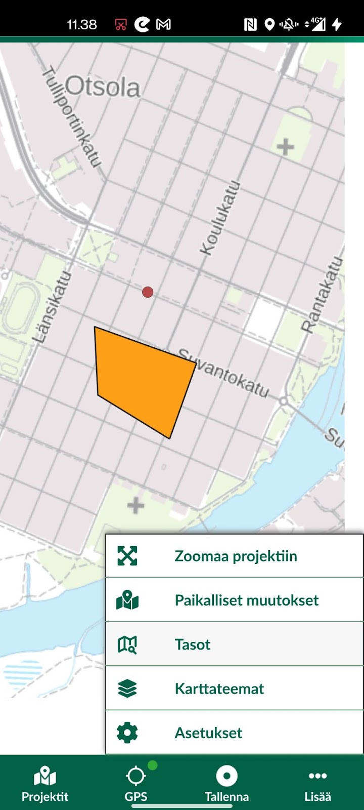
Tarkastellaan ensiksi “Tasot”-välilehteä. Klikkaamalla tasot-välilehteä aukeaa uusi valikko, mistä nähdään projektissa muokattavina olevat tasot. Silmäsymbolia painamalla saadaan taso näkyviin ja pois näkyvistä. Asetukset-välilehdellä voidaan säätää GPS-paikannuksen asetuksia. Ylävalikosta GPS saadaan päälle tai pois päältä. Värisymboli kertoo sen hetkisestä tarkkuudesta, mihin sijoitut kartalla. Voit myös Bluetoothin avulla muodostaa yhteyden ulkoiseen GPS-vastaanottimeen. Valinta kannattaa olla päällä valinnoissa “Käytä uudelleen edellisen arvon…” sekä “Synkronoi muutokset automaattisesti”.
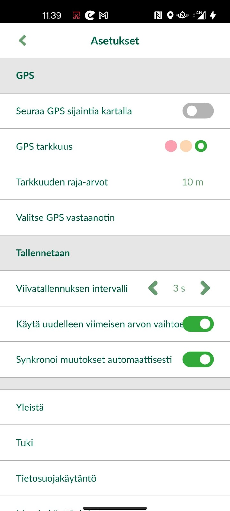
Digitointitila
Tarkastellaan vielä juuri luodulla projektillamme kuinka piste- ja aluekohteiden digitointi tapahtuu. Emme ole vielä määrittäneet ominaisuustietojen syöttötapaa sen tarkemmin, vaan käytössä on oletusasetukset. Tietojen syöttäminen helpottuu ja tehostuu kuitenkin merkittävästi seuraavan harjoituksen jälkeen. Perehdymme nimittäin siinä tarkemmin QGISin lomakkeiden käyttöön ja automatisointiin Mergin Mapsissa.
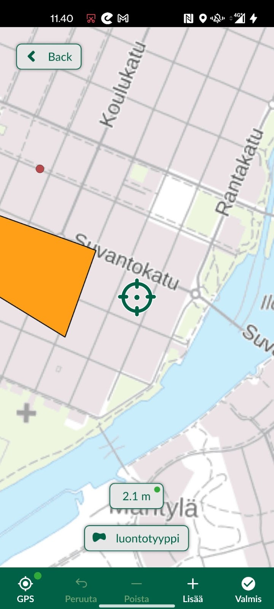
Paina “Tallenna” -painiketta jonka jälkeen osoitin muuttuu “tähtäimeksi”. Alhaalta voi valita muokattavan tason (projektissamme lintuhavainnot tai luontotyyppi) ja sitten painaa alhaalta “Lisää”. Mikäli aktiivisena on aluetaso, piirrä mieluisa alue, tai pistetasolla syötä uusi piste ja paina sitten “Valmis”. Tämän jälkeen sinulle aukeaa tason attribuuttitaulukko niillä tasoilla, joita aiemmin QGISin puolella loimme. Tässä kohtaa voit antaa “Laji” tai “luontotyyppi” sarakkeelle mieluisan nimen ja painamalla kalenterisymbolia ohjelma syöttää automaattisesti ajan. Voit kokeilla täyttää myös muita sarakkeita manuaalisesti. Huomaat että taulukkomuodolla on väliä - Esim. pinta-ala-sarakkeessa pystyt syöttämään vain numeerisia arvoja. Kun olet valmis paina tallenna, ja uusi alue tai piste ilmestyy kartalle ja synkronoituu automaattisesti pilvipalveluun (jos tämä on aktivoituna asetuksissa).

Klikkaamalla tallennettua kohdetta pääset muokkaamaan sitä painamalla Kynä-symbolia. Voit muokata taulukon tietoja tai vasemmasta alakulmasta poistaa tason. Klikkaa nyt oikeasta alakulmasta Päivitä-painiketta, jolloin lisätyt muutokset tallentuvat pilveen. Mene nyt QGISin puolelle ja synkronoi projekti. Nyt tehdyt muutokset pitäisi päivittyä myös QGISin puolelle. Jatkossa voimme pitää molemmat laitteet auki ja synkronoida tasaisin väliajoin, niin näemme, kuinka tieto päivittyy laitteiden välillä.
Lisätehtävä: Tasojen luominen
Luodaan uusi GeoPackage, johon kerättävät paikkatiedot tullaan lisäämään eri tasoina (ylävalikosta Tasot > Luo taso > Uusi GeoPackage-taso…). Valitse Tietokanta-kohdasta GeoPackagen tallennuspaikaksi sama kansio jossa itse QGIS-projekti sijaitsee. Tämä onnistuu painamalla Tietokanta-kohdan oikealta puolelta (painike, jossa 3 pistettä) ja navigoimalla kyseiseen kansioon. Anna GeoPackage-tiedoston nimeksi luontoselvitys ja paina Tallenna/Save. Seuraavan kohdan Taulun nimeksi (eli luotavan tason nimeksi) tulee nyt automaattisesti tämä äsken annettu tiedoston nimi. Valitaan tason geometriatyypiksi Multipolygoni ja koordinaattijärjestelmäksi EPSG 3067 - TM35FIN
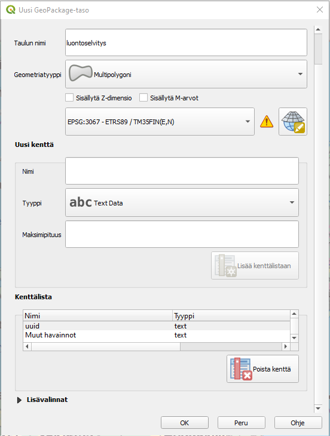
Lisätään vielä Uusi kenttä -kohdasta joitakin peruskenttiä tason ominaisuus-taulukkoon. Lisätään ensin luonto-/kasvillisyystyyppi-niminen kenttä ja valitaan alasvetovalikosta tyypiksi teksti (Text Data). Painetaan Lisää kenttälistaan -nappia. Lisätään lisäksi Muut havainnot-kenttä teksti-tyyppisenä sekä Pinta-ala decimal number (real). Muista klikata jokaisen kentän tietojen täytön jälkeen Lisää kenttälistaan.
Lisätään tämän jälkeen vielä seuraavat datan hallintaan/ metatietoihin liittyvät kentät:
uuid (tyyppi: teksti)
luoja (teksti)
muokkaaja (teksti)
luontiaika (päivämäärä ja aika)
muokkausaika (päivämäärä ja aika)
Tämän jälkeen klikkaa OK, jolloin taso on luotu ja se ilmestyy QGISin Tasot-selaimen listaukseen.
Lisätään vielä 1 taso samaan GeoPackageen (Tasot > Luo Taso > Uusi GeoPackage-taso… ). Navigoidaan nyt Tietokanta-kohdasta valiten äsken luotu Luontoselvitys-GeoPackage-tietokanta. Muutetaan nyt taulun nimeksi Lintuhavainnot, geometriatyypiksi Monipiste, koordinaattijärjestelmäksi EPSG:3067 kuten edellä sekä ominaisuustietokentiksi laji (teksti), lisätiedot (teksti), sekä samat metatiedot kuin edellä. Paina sitten OK. Esiin ponnahtaa ikkuna, jossa ilmoitetaan tiedoston jo olevan olemassa ja kysytään mitä sillä halutaan tehdä. Valitse Lisää uusi taso, jolloin samaan GeoPackage-tietokantaan lisätään uusi taso (Huom! “Korvaa”-vaihtoehto tässä kohtaa kirjoittaa edellä luodun luontoselvitys-tason päälle. Älä valitse sitä!).
Muista tallentaa projektisi!